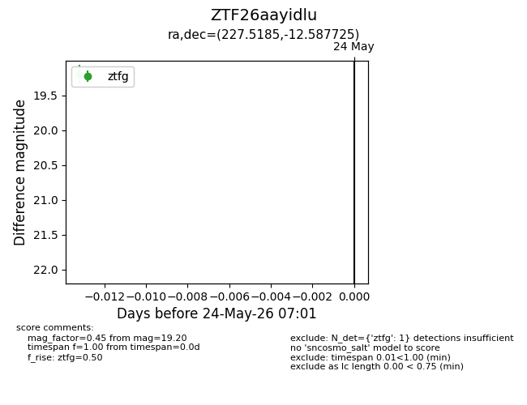
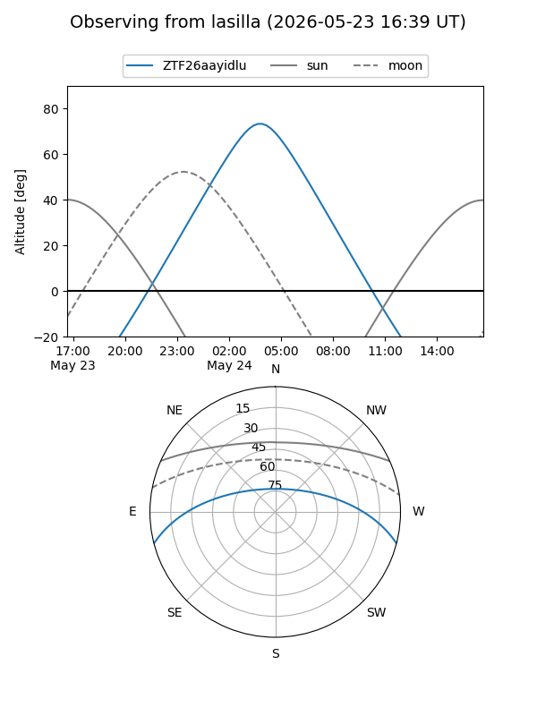
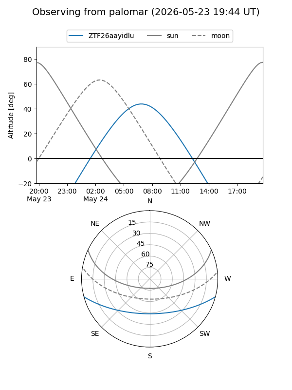

ZTF26aayidlu
Target ZTF26aayidlu at 2026-05-24 07:02
Aliases and brokers:
lsst-FINK: link
lsst-Lasair: link
lsst-ALeRCE: link
ztf-FINK: link
ztf-Lasair: link
ztf-ALeRCE: link
alt names
ZTF26aayidlu (ztf,fink_ztf)
Coordinates:
equatorial (ra, dec) = 227.5185,-12.58772
equatorial (HMS+DMS) = 15:10:04.43,-12:35:15.81
galactic (l, b) = (347.6754,+37.95848)
Flags:
Photometry:
last ztfg=19.20
1 ztfg detections
Lightcurve

Visibility


Additional plots